용접산업기사 (2016-03-06 기출문제)
1과목: 용접야금 및 용접설비제도
1. 용융슬래그의 염기도 식은?
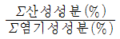
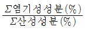
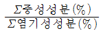
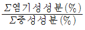
(정답률: 68%)

2. Fe-C계 평형상태도의 조직과 결정구조에 대한 연결이 옳은 것은?
- δ - 페라이트 : 면심입방격자
- 펄라이트 : δ + Fe3C의 혼합물
- γ - 오스테나이트 : 체심입방격자
- 레데뷰라이트 : γ+Fe3C의 혼합물
(정답률: 52%)
3. 용접부 응력제거 풀림의 효과 중 틀린 것은?
- 치수 오차 방지
- 크리프강도 감소
- 용접 잔류 응력 제거
- 응력부식에 대한 저항력 증가
(정답률: 67%)
4. 동합금의 용접성에 대한 설명으로 틀린 것은?
- 순동은 좋은 용입을 얻기 위해서 반드시 예열이 필요하다.
- 알루미늄 청동은 열간에서 강도나 연성이 우수하다.
- 인청동은 열간취성의 경향이 없으며, 용융점이 낮아 편석에 의한 균열 발생이 없다.
- 황동에는 아연이 다량 함유되어 있어 용접시 증발에 의해 기초가 발생하기 쉽다.
(정답률: 67%)
5. 주철의 용접에서 예열은 몇 ℃ 정도가 가장 적당한가?
- 0 ~ 50℃
- 60 ~ 90℃
- 100 ~ 140℃
- 150 ~ 300℃
(정답률: 69%)
6. 용착금속이 응고할 때 불순물은 주로 어디에 모이는가?
- 결정입계
- 결정입내
- 금속의 표면
- 금속의 모서리
(정답률: 61%)
7. 아크 분위기는 대부분이 플럭스를 구성하고 있는 유기물 탄산염 등에서 발생한 가스로 구성되어 있다. 아크 분위기의 가스성분에 해당되지 않는 것은?
- He
- CO
- H2
- CO2
(정답률: 62%)
8. 용접시 용접부에 발생하는 결함이 아닌 것은?
- 기공
- 텅스텐 혼입
- 슬래그 혼입
- 라미네이션 균열
(정답률: 61%)
9. 다음 중 경도가 가장 낮은 조직은?
- 페라이트
- 펄라이트
- 시멘타이트
- 마텐자이트
(정답률: 67%)
10. 용접 비드의 끝에서 발생하는 고온 균열로서 냉각속도가 지나치게 빠른 경우에 발생하는 균열은?
- 종균열
- 횡균열
- 호상균열
- 크레이터균열
(정답률: 75%)
11. KS 분류기호 중 KS-B는 어느 부문에 속하는가?
- 전기
- 금속
- 조선
- 기계
(정답률: 86%)
12. 필릿 용접에서 a5 4 × 300 (50)의 설명으로 옳은 것은?
- 목두께 5mm, 용접부 수 4, 용접길이 300mm, 인접한 용접부 간격 50mm
- 판 두께 5mm, 용접두께 4mm, 용접피치 300mm, 인접한 용접부 간격 50mm
- 용입깊이 5mm, 경사길이 4mm, 용접피치 300mm, 용접부 수 50
- 목길이 5mm, 용입깊이 4mm, 용접길이 300mm, 용접부 수 50
(정답률: 79%)
13. 다음 용접기호의 명칭으로 옳은 것은?
- 플러그 용접
- 뒷면 용접
- 스폿 용접
- 심 용접
(정답률: 91%)
14. 다음 그림 중 I형 맞대기 이음용접에 해당되는 것은?
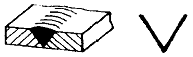
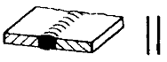
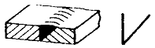
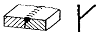
(정답률: 85%)
15. KS 용접 기본기호에서 현장용접 보조 기호로 옳은 것은?
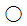
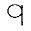
(정답률: 92%)
16. 1개의 원이 직선 또는 원주 위를 굴러갈 때, 그 구르는 원이 원주 위 1점이 움직이며 그려 나가는 선은?
- 타원(ellipse)
- 포물선(parabola)
- 쌍곡선(hyperbola)
- 사이클로이드 곡선(cycloidal curve)
(정답률: 75%)
17. 도면에 치수를 기입할 때의 유의 사항으로 틀린 것은?
- 치수는 계산할 필요가 없도록 기입하여야 한다.
- 치수는 중복 기입하여 도면을 이해하기 쉽게 한다.
- 관련되는 치수는 가능한 한곳에 모아서 기입한다.
- 치수는 될 수 있는 대로 주투상도에 기입해야 한다.
(정답률: 84%)
18. 척도의 표시 방법에서 A : B로 나타낼 때 A가 의미하는 것은?
- 윤곽선의 굵기
- 물체의 실체 크기
- 도면에서의 크기
- 중심마크의 크기
(정답률: 57%)
19. 45° 모따기의 기호는?
- SR
- R
- C
- t
(정답률: 89%)
20. 굵은 실선으로 나타내는 선의 명칭은?
- 외형선
- 지시선
- 중심선
- 피치선
(정답률: 83%)
2과목: 용접구조설계
21. 용접이음의 종류에 따라 분류한 것 중 틀린 것은?
- 맞대기 용접
- 모서리 용접
- 겹치기 용접
- 후진법 용접
(정답률: 90%)
22. 피복 아크 용접에서 발생한 용접결함 중 구조상의 결합이 아닌 것은?
- 기공
- 변형
- 언더컷
- 오버랩
(정답률: 85%)
23. 용접부 시험에는 파괴 시험과 비파괴 시험이 있다. 파괴시험 중에서 야금학적 시험 방법이 아닌 것은?
- 파면 시험
- 물성 시험
- 매크로 시험
- 현미경 조직 시험
(정답률: 47%)
24. 용접성을 저하시키며 적열 취성을 일으키는 원소는?
- 황
- 규소
- 구리
- 망간
(정답률: 88%)
25. 작은 강구나 다이아몬드를 붙인 소형 추를 일정한 높이에서 시험편 표면에 낙하시켜 튀어 오르는 반발 높이로 경도를 측정하는 시험은?
- 쇼어 경도 시험
- 브리넬 경도 시험
- 로크웰 경도 시험
- 비커스 경도 시험
(정답률: 63%)
26. 재료의 크리프 변형은 일정 온도의 응력하에서 진행하는 현상이다. 크리프 곡선의 영역에 속하지 않는 것은?
- 강도크리프
- 천이크리프
- 정상크리프
- 가속크리프
(정답률: 44%)
27. 레이저 용접의 특징으로 틀린 것은?
- 좁고 깊은 용접부를 얻을 수 있다.
- 고속 용접과 용접 공정의 융통성을 부여할 수 있다.
- 대입열 용접이 가능하고, 열영향부의 범위가 넓다.
- 접합되어야 할 부품의 조건에 따라서 한면 용접으로 접합이 가능하다.
(정답률: 74%)
28. 길이가 긴 대형의 강관 원주부를 연속 자동용접을 하고자 한다. 이때 사용하고자 하는 지그로 가장 적당한 것은?
- 엔드 탭(end tap)
- 터닝롤러(turning roller)
- 컨베이어(conveyor) 정반
- 용접 포지셔너(welding Positioner)
(정답률: 70%)
29. 용접 지그(Jig)에 해당되지 않는 것은?
- 용접 고정구
- 용접 포지셔너
- 용접 핸드 실드
- 용접 매니퓰레이터
(정답률: 84%)
30. 용접 구조물 조립 시 일반적인 고려사항이 아닌 것은?
- 변형제거가 쉽게 되도록 하여야 한다.
- 구조물의 형상을 유지할 수 있어야 한다.
- 경제적이고 고품질을 얻을 수 있는 조건을 설정한다.
- 용접 변형 및 잔류 응력을 상승시킬 수 있어야 한다.
(정답률: 87%)
31. 용착금속의 최대인장강도 σ=300MPa이다. 안전율을 3으로 할 때 강판의 허용응력은 몇 MPa인가?
- 50
- 100
- 150
- 200
(정답률: 87%)
32. 내마멸성을 가진 용접봉으로 보수 용접을 하고자 할 때 사용하는 용접봉으로 적합하지 않은 것은?
- 망간강 계통의 심선
- 크롬강 계통의 심선
- 규소강 계통의 심선
- 크롬-코발트-텅스텐 계통의 심선
(정답률: 53%)
33. 처음길이가 340mm인 용접 재료를 길이방향으로 인장시험 한 결과 390mm가 되었다. 이 재료의 연신율은 약 몇 % 인가?
- 12.8
- 14.7
- 17.2
- 87.2
(정답률: 65%)
34. V형에 비하여 홈의 폭이 좁아도 작업성과 용입이 좋으며 한 쪽에서 용접하여 충분한 용입을 얻을 필요가 있을 때 사용하는 이음 현상은?
- U형
- I형
- X형
- K형
(정답률: 64%)
35. 용접이음의 피로강도에 대한 설명으로 틀린 것은?
- 피로강도란 정적인 강도를 평가하는 시험방법이다.
- 하중, 변위 또는 열응력이 반복되어 재료가 손상되는 현상을 피로라고 한다.
- 피로강도에 영향을 주는 요소는 이음형상, 하중상태, 용접부 표면상태, 부식환경 등이 있다.
- S - N선도를 피로선도라 부르며, 응력 변동이 피로한도에 미치는 영향을 나타내는 선도를 말한다.
(정답률: 55%)
36. 그림과 같은 V형 맞대기 용접에서 각부의 명칭 중 틀린 것은?
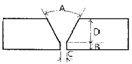
- A : 홈 각도
- B : 루트 면
- C : 루트 간격
- D : 비드높이
(정답률: 83%)
37. 용접작업에서 지그 사용 시 얻어지는 효과로 틀린 것은?
- 용접 변형을 억제한다.
- 제품의 정밀도가 낮아진다.
- 대량생산의 경우 용접 조립 작업을 단순화 시킨다.
- 용접작업이 용이하고 작업능률이 향상된다.
(정답률: 90%)
38. 용접 홈의 형상 중 V형 홈에 대한 설명으로 옳은 것은?(오류 신고가 접수된 문제입니다. 반드시 정답과 해설을 확인하시기 바랍니다.)
- 판 두께가 대략 6mm 이하의 경우 양면 용접에서 사용한다.
- 양쪽 용접에 의해 완전한 용입을 얻으려고 할 때 쓰인다.
- 판 두께 3mm 이하로 개선 가공 없이 한쪽에서 용접할 때 쓰인다,
- 보통 판 두께 15mm 이하의 판에서 한쪽 용접으로 완전한 용입을 얻고자 할 때 쓰인다.
(정답률: 59%)
39. 용접기에서 사용되는 전선(cable) 중 용접기에서 모재까지 연결하는 케이블은?
- 1차 케이블
- 입력 케이블
- 접지 케이블
- 비닐코드 케이블
(정답률: 82%)
40. 용접 구조 설계상의 주의사항으로 틀린 것은?
- 용착금속량이 적은 이음을 선택할 것
- 용접치수는 강도상 필요한 치수 이상으로 크게 하지 말 것
- 용접성, 노치인성이 우수한 재료를 선택하여 시공이 쉽게 설계할 것
- 후판을 용접할 경우는 용입이 얕고 용착량이 적은 용접법을 이용하여 층수를 늘릴 것
(정답률: 83%)
3과목: 용접일반 및 안전관리
41. 가스용접에서 산소압력조정기의 압력조정나사를 오른쪽으로 돌리면 밸브는 어떻게 되는가?
- 닫힌다.
- 고정된다.
- 열리게 된다.
- 중립상태로 된다.
(정답률: 75%)
42. 가용접 시 주의사항으로 틀린 것은?
- 강도상 중요한 부분에는 가용접을 피한다.
- 본 용접보다 지름이 굵은 용접봉을 사용하는 것이 좋다.
- 용접의 시점 및 종점이 되는 끝 부분은 가용접을 피한다.
- 본 용접과 비슷한 기량을 가진 용접사에 의해 실시하는 것이 좋다.
(정답률: 86%)
43. 피복아크용접에서 용입에 영향을 미치는 원인이 아닌 것은?
- 용접 속도
- 용접 홀더
- 용접 전류
- 아크의 길이
(정답률: 90%)
44. 직류 아크 용접기에서 발전형과 비교한 정류기형의 특징으로 틀린 것은?
- 소음이 적다.
- 보수 점검이 간단하다.
- 취급이 간편하고 가격이 저렴하다.
- 교류를 정류하므로 완전한 직류를 얻는다.
(정답률: 79%)
45. 저항용접에 의한 압접에서 전류 20A, 전기저항 30Ω, 통전시간 10 sec일 때 발열량은 약 몇 cal 인가?
- 14400
- 24400
- 28800
- 48800
(정답률: 52%)
46. 불활성 가스 아크 용접에서 비용극식, 비소모식인 용접의 종류는?
- TIG 용접
- MIG 용접
- 퓨즈 아크법
- 아코스 아크법
(정답률: 73%)
47. 가스 용접의 특징으로 틀린 것은?
- 아크 용접에 비해 불꽃온도가 높다.
- 응용 범위가 넓고 운반이 편리하다.
- 아크용접에 비해 유해 광선의 발생이 적다.
- 전원 설비가 없는 곳에서는 용접이 가능하다.
(정답률: 74%)
48. 산소-아세틸렌 가스로 절단이 가장 잘 되는 금속은?
- 연강
- 구리
- 알루미늄
- 스테인리스강
(정답률: 73%)
49. 산소 용기 취급 시 주의사항으로 틀린 것은?
- 산소병을 눕혀 두지 않는다.
- 산소병은 화기로부터 멀리한다.
- 사용 전에 비눗물로 가스 누설검사를 한다.
- 밸브는 기름을 칠하여 항상 유연해야 한다.
(정답률: 88%)
50. 지름이 3.2mm 인 피복 아크 용접봉으로 연강판을 용접하고자 할 때 가장 적합한 아크의 길이는 몇 mm 정도인가?
- 3.2
- 4.0
- 4.8
- 5.0
(정답률: 76%)
51. 다음 중 용사법의 종류가 아닌 것은?
- 아크 용사법
- 오토콘 용사법
- 가스 불꽃 용사법
- 플라즈마 제트 용사법
(정답률: 67%)
52. 가스 용접 토치의 취급상 주의사항으로 틀린 것은?
- 토치를 망치 등 다른 용도로 사용해서는 안된다.
- 팁 및 토치를 작업장 바닥이나 흙 속에 방치하지 않는다.
- 팁을 바꿔 끼울 때에는 반드시 양쪽 밸브를 모두 열고 팁을 교체한다.
- 작업 중 발생하기 쉬운 역류, 역화, 인화에 항상 주의하여야 한다.
(정답률: 92%)
53. 산소 및 아세틸렌용기 취급에 대한 설명으로 옳은 것은?
- 산소병은 60℃이하, 아세틸렌 병은 30℃ 이하의 온도에서 보관한다.
- 아세틸렌 병은 눕혀서 운반하되 운반도중 충격을 주어서는 안된다.
- 아세틸렌 충전구가 동결되었을 때는 50℃ 이상의 온수로 녹여야 한다.
- 산소병 보관 장소에 가연성 가스를 혼합하여 보관해서는 안 되며 누설시험 시는 비눗물을 사용한다.
(정답률: 79%)
54. 카바이드 취급 시 주의사항으로 틀린 것은?
- 운반 시 타격, 충격, 마찰 등을 주지 않는다.
- 카바이드 통을 개봉할 때는 정으로 따낸다.
- 저장소 가까이에 인화성 물질이나 화기를 가까이 하지 않는다.
- 카바이드는 개봉 후 보관 시는 습기가 침투하지 않도록 보관한다.
(정답률: 90%)
55. 일렉트로 슬래그 용접의 특징으로 틀린 것은?
- 용접 입열이 낮다.
- 후판 용접에 적당하다.
- 용접 능률과 용접 품질이 우수하다.
- 용접 진행 중 직접 아크를 눈으로 관찰할 수 없다.
(정답률: 59%)
56. 서브머지드 아크 용접의 특징으로 틀린 것은?
- 유해광선 발생이 적다.
- 용착속도가 빠르며 용입이 깊다.
- 전류밀도가 낮아 박판용접에 용이하다.
- 개선각을 작게하여 용저브이 패스수를 줄일 수 있다.
(정답률: 71%)
57. 탄산가스 아크용접 장치에 해당되지 않는 것은?
- 제어 케이블
- CO2 용접 토치
- 용접봉 건조로
- 와이어 송급장치
(정답률: 82%)
58. 용착 금속 중의 수소 함유량이 다른 용접봉에 비해 약 1/10 정도로 현저하게 적어 용접성은 다른 용접봉에 비해 우수하나 흡습하기 쉽고, 비드 시작점과 끝점에서 아크 불안정으로 기공이 생기기 쉬운 용접봉은?
- E4301
- E4316
- E4324
- E4327
(정답률: 89%)
59. AW300 용접기의 정격사용률이 40%일 때 200 A로 용접을 하면 10분 작업 중 몇 분까지 아크를 발생해도 용접기에 무리가 없는가?
- 3분
- 5분
- 7분
- 9분
(정답률: 49%)
60. 가스용접에서 충전가스 용기의 도색을 표시한 것으로 틀린 것은?
- 산소 - 녹색
- 수소 - 주황색
- 프로판 - 회색
- 아세틸렌 - 청색
(정답률: 78%)